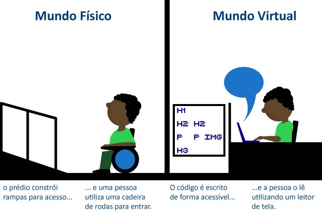

Cidades sem barreiras
Ruas, edifícios e transportes devem permitir deslocamentos com segurança e autonomia.

Calçadas e rampas
Calçadas livres de obstáculos e rampas adequadas facilitam a circulação de pessoas com mobilidade reduzida.
Orientação e transporte
Pisos táteis, sinalização compreensível e veículos acessíveis ajudam diferentes pessoas a se deslocar.
Atitudes no espaço público
Não bloqueie rampas, calçadas ou vagas reservadas. Respeite o espaço de circulação de outras pessoas.
Referências
ENAP. eMAG Conteudista: Módulo 1 / Introdução (2016) e Módulo 2 / Web Acessível (2016).